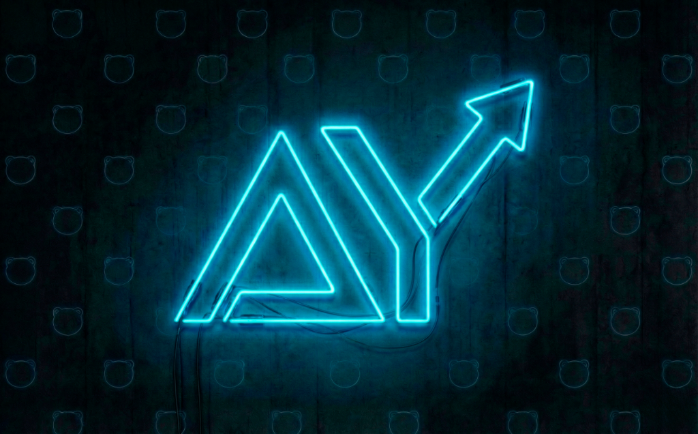

Delta Why
Code • Flow • Growth
Senior PHP Dev. Recovering from burnout. Exploring Vibe Coding, Biohacking & DevOps.
Code • Flow • Growth
Senior PHP Dev. Recovering from burnout. Exploring Vibe Coding, Biohacking & DevOps.